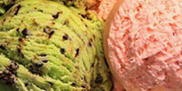

A todos les gusta el verano
El verano es la mejor estacion del año porque hace calor. Épocas de playa, erveza, terrazas, disfrurtar de unas merecidas vacaciones y viajar.

¿Existe algo mejor que un helado?
Hay de todo tipo, desde los de crema hasta los de hielo, frutas o sabores exóticos.